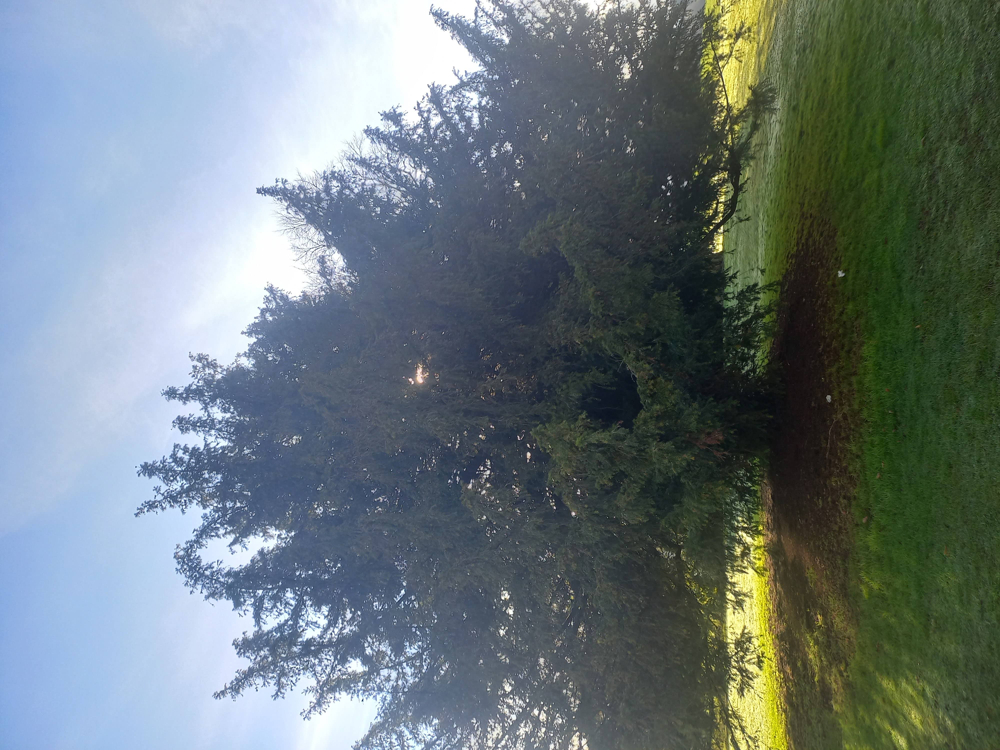

An Article About Myself
My name is Ebenezer Ayo-Metibemu. I am Nigerian, a Christian, and I am studying currently as an international student in Keele University. I like Keele very much because of its atmosphere and the nature in it. It is a somewhat separated area and so is safer and there is less smoke in the air. This makes walking around enjoyable. Moreover, because Keeele is a highland the winds that blow over the high areas are very soothing. Regardless of the fact that it gets really cold, especially at winter nights, the cold is itself fun. The snow can come almost immediately, covering the floors in a pure white blanket. It is a priviledge to study here, nothing really I worked for, and so I have to make the best use of it.
Love does not show itself when you are good to those from whom you received good, but it is love because you were wronged and still forgave. Love gives and is loyal.